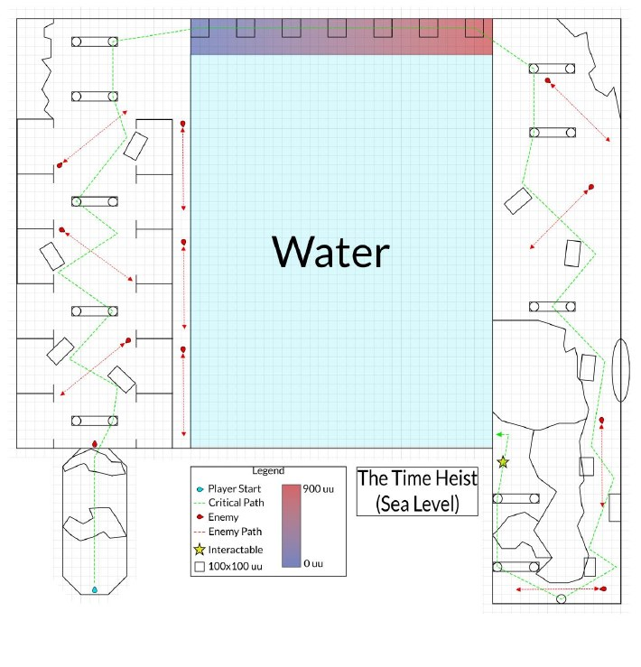
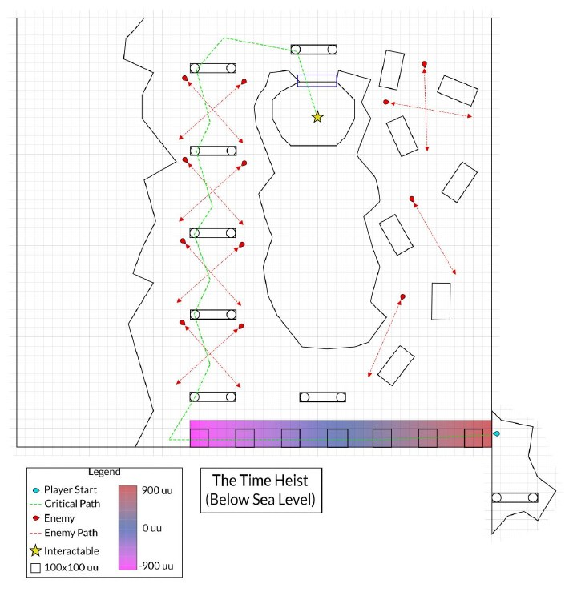

01
Plan it in 2D
Level design doc
I mapped the level on two floors: sea level, where the player starts, and below sea level, which opens once the water drains. Height is color-coded from -900 to 900 units, and each map shows the critical path, enemy patrols, and interactables.

